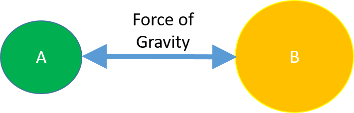
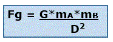
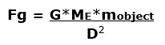
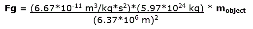
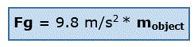

Gravitational Force
What is Gravitational force? The force due to gravity, or the gravitational force, is an attractive force between any objects. This attractive force is caused by the masses of the objects. That is, all objects pull other objects that have mass to them. The more mass the objects have, the stronger the gravitational pull between them is!
Some people think that the force of gravity just has to do with the pull of the earth (or other very large objects). But gravitational forces are actually between any objects, regardless of their sizes (after all, all objects have mass!).
Gravitational force, like all forces, is a vector quantity. This means it has both a magnitude (amount) and a direction.
For example,

In Case #2, Object A is still 15 kg, but Object C has more mass (50 kg).
Gravity is an interaction between objects. Like we already said, the more mass the two objects have, the stronger the gravitational attraction force between the two objects is. Gravitational forces are very small except when one or both of the objects have a large mass (like the Earth or Sun). We can say that the force of gravity between two objects is directly proportional to the mass of each object:
Fg ∝ mass (Object A)
Fg ∝ mass (Object B)
This means that the gravitational force (Fg) increases as the mass of Object A increases *and* that the gravitational force (Fg) increases as the mass of Object B increases.
As you might expect, the farther apart the two objects are, the smaller the gravitational attraction is. In fact, the force of gravity decreases pretty fast as the distance increases! This relationship is shown here:
Fg ∝ 1/(Distance between the objects)2
If we combine all of these factors (mass and distance), we get:
Fg ∝ [mass (Object A) × mass (Object B)]/(Distance between the objects)2
Or
Fg ∝ (massA massB)/(Distance)2
This means that the force of gravity acting on Object A is equal to the force of gravity acting on
Object B.
They pull on each other with the same force! This idea of the mutual attractive nature of gravity is
shown in the picture below:

This fact that there is the same pull of gravity acting on both objects is analogous to the fact that when
objects collide, they exert the same force on each other.
So, you could say that
Newton's Third Law
applies to gravitational forces between two objects.
Acceleration due to gravity. The acceleration of objects on a planet (or moon) due to gravitational force is proportional to the mass of the planet (or moon). Why? You may ask? Well, let's look again at the equation below (you may recognize this equation from the previous page):
Fg ∝ (massobject × massplanet)/(Distance)2
If only the gravitational force acts on the object, then according to Newton's Second Law:
massobject x accelerationobject = (massobject × massplanet)/(Distance)2
Then, simply dividing both sides of the equation by massobject, we get:
accelerationobject = massplanet/(Distance)2
This tells us that the acceleration of an object due to gravity (when only gravity acts on the object) increases as the planet's mass increases.
((Slightly more Advanced section (due to more math)))
Newton's Law of Universal Gravitation.
We can combine these relationships in the following formula, called Newton's law of universal gravitation, which shows the strength of the force of gravity between two objects (A and B), based on their masses, and the distance between the objects:

G is the “gravitational constant.” G = 6.67 × 10-11 m3/kg × s2
mA is the mass (in kilograms, or kg) of Object A.
mB is the mass (in kilograms, or kg) of Object B.
D is the distance (in meters, or m) between the two objects (from the centers of the objects). As you might expect, the farther apart the two objects are, the less the force of gravitational attraction is between the objects.
Now, let’s apply Newton’s law of universal gravitation to an object on the surface of the Earth:
G = 6.67 × 10-11m3/kg × s2 (the same as for any massive objects attracted via gravity)
The mass of the Earth, ME, is 5.97 × 1024kg
The distance between the center of the Earth and an object on the Earth is equal to the radius of the Earth, which is 6.37 × 106m.
So...
Doing the math…
This means that the acceleration due to gravity for all objects on Earth is 9.8 m/s2 (about 10 m/s2). If gravity is the only force acting on an object, the object will fall with this acceleration (regardless of the size or mass of the object).
And, in fact, this is the same value that scientists measured by running experiments of objects falling in vacuums.
((End of Slightly more Advanced section)


{kind=link}
{kind=link}
{kind=link}
{kind=link}
{kind=link}